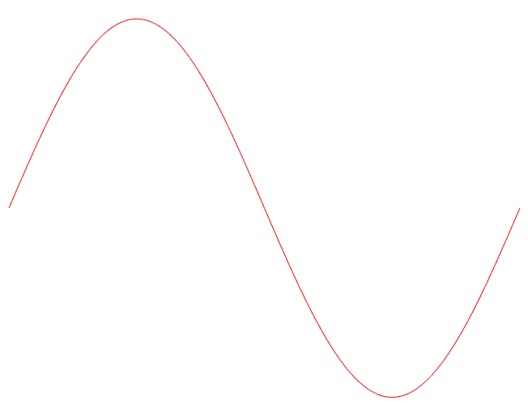

Hello, I am Thai-Son Tu.
problem solver by day, photographer by night.
I am a Ph.D. student at the University of Wisconsin - Madison under the guidance of Professor Hung V. Tran. My dissertation is about Partial Differential Equations, particularly questions related to Hamilton-Jacobi equations.
I am interested in applied probability, statistics, machine learning and in using these skill sets to solve real world problems.1
News
- My paper with Yuxi Han has been accepted to Applied Mathematics & Optimization.
- My paper has been accepted to Journal of Differential Equations.
- The Anki deck I created in 2013 to learn TOEFL has been downloaded 20965 times! (updated Jan 10, 2022)
- I was invited to give a talk at the Applied Math seminar, UNCC on Sep 24, 2021.
- I am recently awarded the GSSC Fellowship and I am an instructor for Math 112 (College algebra - Summer 2021).
- I have been awarded the Excellent in Research Award by the Mathematics Department, UW-Madison (2021).
- I have been awarded the Outstanding Teaching Assistant Award by the Mathematics Department, UW-Madison (2020).
- In May 18-21, 2020, my advisor and I will organize Madison Workshop in PDEs 2020, see madpde2020 (postponed due to Covid).
Publications and preprints
- (with Yuxi Han) Remarks on the vanishing viscosity process of state-constraint Hamilton-Jacobi equations, to appear in Applied Mathematics & Optimization – arXiv.
- Vanishing discount problems for Hamilton-Jacobi equations on changing domains, Journal of Differential Equations – arXiv.
- (with Yeoneung Kim and Hung V. Tran) State-constraint static Hamilton-Jacobi equations in nested domains, SIAM Journal on Mathematical Analysis – arXiv.
- Rate of convergence for periodic homogenization of convex Hamilton-Jacobi equations in one dimension, Asymptotic Analysis – arXiv.
CONTACT INFORMATION
Department of Mathematics
University of Wisconsin - Madison
Madison, WI 53706.
822 Van Vleck Hall, 480 Lincoln Drive.
E-mail: thaison@math.wisc.edu
